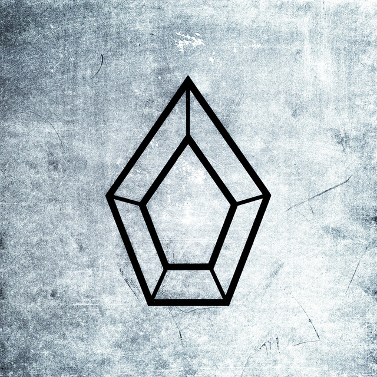
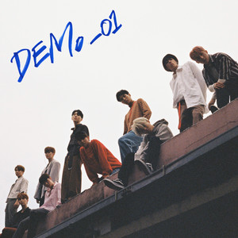
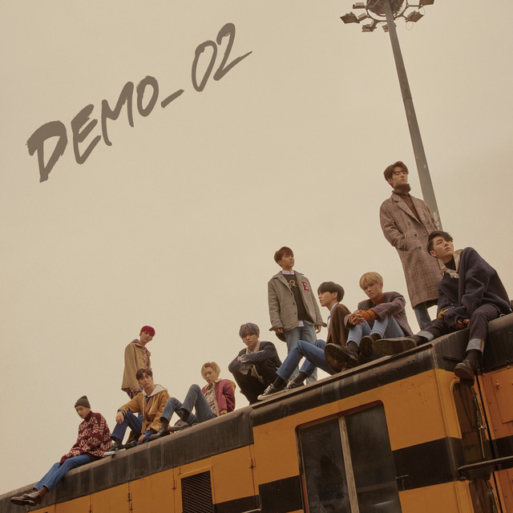
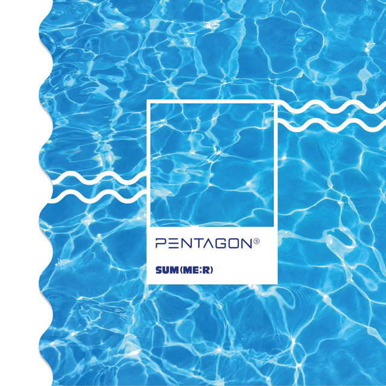
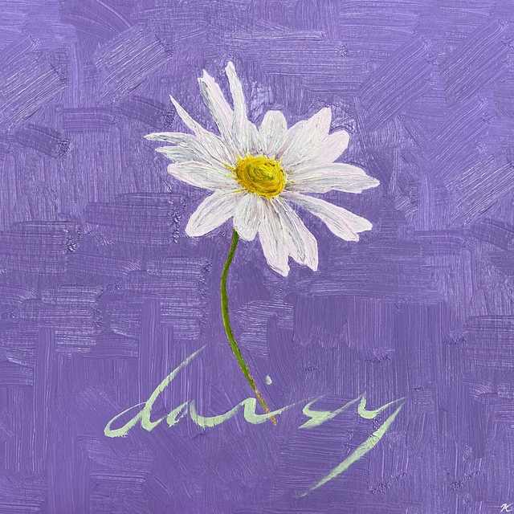

PENTAGON (Self Titled)
Release Year: 2016
Type: Debut Mini Album (EP)
Notable Tracks:
- Gorilla
- Lukewarm
- Smile
Score: 8.5/10
The very first release comes in the form of a self titled debut. "PENTAGON" is a 7 track EP released on October 10, 2016 released under the Cube Entertainment LOEN Entertainment label. While the project's specific genre falls under K-Pop, it incorporates a multitude of other styles such as R&B, funk, electro, and hip-hop.
This EP is a VERY strong debut showcasing the group’s versatility. The title track "Gorilla" establishes the general sound that the band holds, while b-sides like "Lukewarm" bring on more emotional tones and add depth to their versatility. Interestingly enough, there are a lot of experimental elements on this project, like the funk infused electronic production on "Gorilla", which isn't usually seen on a debut project. However, this gives listeners a good idea of what is to be expected from this band. An iconic sound mixed in with not-so traditional implementations to create a completely new style in itself. It's a solid introduction to their identity.
Overview
• Best Song: Gorilla
- This song has become one of the group's most iconic tracks to date.
•
Favorite Song: PENTAGON
- There's something about that bright production and explosive vocal presence I just love.
•
Least Favorite Song: Wake up (Intro)
- The song itself is actually very good but by comparison I feel it is easily the weakest link.
•
Most Underrated Song: Organic song
- Don't sleep on their slower tracks!!! This song is very greatly executed.
Overall, this album showcases PENTAGON's ability to blend various genres while following their own unique
sound. Highly recommended EP, a must-listen for fans and newcomers.
Five Senses
Release Year: 2016
Type: Mini Album (EP)
Notable Tracks:
- Stay Crazy
- Can You Feel It
- Pretty Pretty
Score: 7/10
Released the same year as their debut, we are given yet another mini EP. "Five Senses", packed with five tracks released just about two months later on December 7, 2016 is star studded with some very fun songs.
This EP leans into funkier and upbeat sounds. With bright production and vocal performances, this almost feels like clean cuts from "PENTAGON". Each track delivers an uplifting, summery feeling accompanied by catchy hooks and flows. A big part of this project comes from the further implementation of swing, which will also become even more prevalent in the band's later works. This simple addition adds even more groove and makes their voices hit even harder. Speaking of which, I have to express how great Jinho and Hui sounded on the chorus of "Lose Yourself". Maybe the vibes were hitting a little too hard for me but they sounded like they had even more passion on this track than previously seen. Then the introduction of Kino, Yeo One, Yan An, and Shinwon on the post-chorus made everything feel whole. One thing this EP definitely doesn't lack is amazingly executed vocal performances which are solid all the way through from beginning to end.
1. "Can You Feel It"
The title track is an high energy opener, packed with a driving beat, energetic structure, and a VERY catchy hook. The playful interplay between the members' vocals and rap sections showcases their chemistry and charisma. It's an addictive track with an edgy, rebellious charm that commands attention.
2. "Engine"
This track is an anthem that keeps the energy levels soaring. The intense beat and ferociously delivered rap lines make it a standout track for its confidence. “Engine” demonstrates PENTAGON's ability to deliver a hard-hitting track without losing their melodic appeal.
3. "Pretty Pretty"
A contrast to the previous track with this more lighthearted and upbeat song that radiates charm. “Pretty Pretty” is filled with bright instrumentals and rather playful lyrics. It's a fun track that portrays PENTAGON's energy and liking for catchy melodies.
4. "Lose Yourself"
A mid-tempo track that holds a LOT of R&B influences, “Lose Yourself” is a smooth and captivating track that stands out on this project. The layered harmonies and lush production create a rather alluring soundscape adding to the depth of the project.
5. "Stay Crazy"
The closing track is a lively, danceable song that ends the EP on a very high note. Its rhythm and dynamic vocal delivery makes it the perfect finale, leaving listeners wanting more from this group.
All in all, this is a pretty good sophomore project from the group. While the cohesion is slightly weaker than their debut EP, every song delivers the bright and synchronized sound that listeners of the group have come to love. With high energy standouts like "Can You Feel It" to party anthems like "Pretty Pretty" this project holds a very special place both in the band's discography as well as my own personal music vault. It may not be the most groundbreaking project, but what can't be denied is that this is a very fun listen.
Overview
• Best Song: Can You Feel It
- This opening track currently holds over 4 million streams.
•
Favorite Song: Lose Yourself
- IT'S TOO GOOD FOR WORDS TO EXPLAIN WHY!!! JUST GO LISTEN TO IT!!!
•
Least Favorite Song: Engine
- Not a bad song by any means, I juts don't find myself returning to it as much as the other tracks.
•
Most Underrated Song: Lose Yourself
- (Read above for reasons as to why)
As mentioned before, while this may not be their most impactful project by any means, I still think it is a fun listen and would recommend it to those who want a bit extra from the group after listening to their debut.
CEREMONY

Release Year: 2017
Type: Mini Album (EP)
Notable Tracks:
- Critical Beauty
- Thank you
- Beautiful
Score: 8.5/10
PENTAGON's junior EP, "CEREMONY", released on June 12, 2017 feels like a stark contrast to both of the group's previous releases. While "PENTAGON" and "Five Senses" primarily utilized dazzling synths and quick tones, this project takes a bit of a slower approach in both sound selection and artistic performance. These alterations brings a new outlook on the group as they continue to grow and develop their own sound.
The opening track, "Critical Beauty" entails that iconic PENTAGON sound with high energy vocals and a fast tempo instrumental however there is a notable difference with this track alone. It emphasizes and infuses both modern pop and retro swing, a great portrayal of the groups diversity and musical experimentation. The innovative decision making on this project prove to be rather prevalent throughout this project also, with songs like "Spectacular" and "Lucky" also implementing a blend of multiple genres to further develop their ideas.
1. "Critical Beauty"
The title track is a retro-inspired bop that cleverly mixes doo-wop influences with modern hip-hop beats. Its playful vibe, witty lyrics, and dynamic performance highlight PENTAGON's ability to experiment with genres while staying true to their energetic identity. The brass section and funky rhythm make it irresistibly catchy and memorable.
2. "Lucky"
A refreshing, upbeat track with a bright and cheerful tone, "Lucky" feels like a summer anthem. The light instrumentation and breezy vocals create a carefree atmosphere, delivering an instant serotonin boost.
3. "To Universe"
This heartfelt ballad is a love letter to PENTAGON's fandom, Universe. The soft melodies and poignant lyrics express gratitude and hope, making it an emotional highlight of the album. The sincerity in the members' delivery shines through, creating a touching connection with listeners.
4. "Nothing"
"Nothing" is a laid-back track with a groovy rhythm and minimalistic production. Its understated charm comes from the smooth vocals and relaxed vibe, offering a nice contrast to the more upbeat songs on the EP.
5. "Spectacular"
Bursting with energy and optimism, "Spectacular" is an empowering track about finding beauty in life's challenges. Its anthemic chorus and vibrant instrumentation make it a standout moment that lifts the mood.
6. "Thank you"
A somber and orchestral track that focuses mainly on emotional factor over all other elements. This is quite easily the most touching track on the project that allows the uplifting vocals to shine against the sad instrumental.
7. "Beautiful"
This bonus track is a poignant ballad written and produced by BTOB's Ilhoon. The emotional lyrics and stripped-down arrangement allow PENTAGON's vocalists to shine, delivering a moving and heartfelt performance.
This is a very well rounded project and it follows a very cohesive pattern that ultimately makes it way easier for a listener to follow along even if they aren't too fond of the genre. It balances the two main tones, upbeat and mellow, very well, which isn't always the easiest thing to pull off when it comes to genres as fast paced as K-Pop.
Overview
•
Best Song: Critical Beauty
- Another amazing opening track from this group.
•
Favorite Song: Thank You
- This could go down as one of their most beautifully crafted tracks to date!!! The singing is simply amazing and the emotional tones speak VOLUMES!!!
•
Least Favorite Song: Nothing
- A good track however it lacks the diversity of the other tracks on this project.
•
Most Underrated Song: Lucky
- A great example of blending tones in this genre-bending song.
In the end, this is definitely an upgrade from both of the previous releases I feel. It showcases just how far the group is willing to go and what boundaries they are willing to stretch in order to create these amazing listening experiences. The project was, from start to end, a very cohesive and enjoyable listening experience, perfect for anyone looking to get into this genre as it defines quite possibly one of the most creative visions that the group has brought to fruition thus far.
DEMO_01

Release Year: 2017
Type: Mini Album (EP)
Notable Tracks:
- Like This
- Stay With Me
- It's Over
Score: 9/10
On September 6, 2017, PENTAGON returned with another EP following the success of "CEREMONY". This 5 song project may be one of their shorter releases but it brings so much value to their discography as a whole. By this point, the group is focusing less on incorporating other elements and is instead working with the sound that they have already developed to create new experiences. What I enjoy most about this release is that it was actually mostly self produced and seemingly allowed the group the most amount of creative freedom thus far. This detail of freedom allowed for each member to get as personal as they wanted to which adds to the overall authenticity of this project.
This is more than just a senior project from the group, in fact, it shows a level of growth in all musical aspects from production and cadence to songwriting and emotional appeal. The opening track "Like This" gives listeners a grand overview of what will be coming later in the EP with summer coded styling and catchy lyrics. The summer theme actually follows each track on this EP which adds to its cohesive nature. The self-produced nature of DEMO_01 adds a layer of authenticity to the album. It reflects the members' growth as artists, with tracks that feel both deeply personal and relatable. Along with the summer aspects, the EP also explores themes of love, dreams, and self-discovery, resonating with fans through its sincerity
1. "Like This"
The title track, "Like This," is an upbeat opening with heartfelt lyrics and an anthemic sound. The beat and emotionally jarring melodies really highlight PENTAGON's vocal and rap versatility. It's a rather motivational anthem about chasing one's dreams which resonate deeply with listeners.
2. "It's Over"
A softer track that blends a wistful tone with smooth vocals. The use of the acoustic guitar and an otherwise minimalistic beat gives it a nostalgic feel, making it a standout for its emotional weight.
3. "One More Night"
This mid-tempo track resonates with a lucious vibe, held together by a groovy bassline and an understated instrumental. The lyrics delve into longing and self vulnerability, which is enhanced by a compelling vocal performance.
4. "Get That Drink"
This is a lighthearted song that leans into fun, youthful energy. Its catchy chorus and playful lyrics make it a refreshing addition to the album, which offers a moment of carefree enjoyment.
5. "When I Was In Love"
Closing the EP is another glorious ballad that puts emotion at the forefront. The soft instrumentation complements the heartfelt delivery from the group.
The album feels raw yet polished, balancing emotional introspection with playful energy, and it cemented PENTAGON's reputation as a self-sufficient group with a unique artistic vision. I must say that as of this point this is easily the group's best work. This feels like a true work of art that stems from true emotional experiences that each of the members have gone through. While it may not be the most defining EP for breaking into K-Pop it is most certainly a great listen that shows just how far the genre can be stretched and altered.
Overview
• Best Song: Like This
- Following the trend of the opening track doing the best numerically.
•
Favorite Song: When I Was In Love
- This song appeals to emotions and creates a semi-upbeat tone all while sticking to the summer theme.
•
Least Favorite Song: Get That Drink
- Once again, not a bad track although it does break the cohesiveness of this EP.
•
Most Underrated Song: One More Night
- There's something nostalgic about the overall vibe and sound of this song that I really enjoy.
In conclusion, DEMO_01 is essentially a testament to PENTAGON's ability to connect with their audience through honest storytelling and diverse soundscapes. Its mixture of heartfelt ballads and upbeat tracks creates a well-rounded project that appeals to a wide range of listeners. While not overly polished, the rawness of the EP is part of its charm, showcasing the group's growth and creative potential.
Demo_02

Release Year: 2017
Type: Mini Album (EP)
Notable Tracks:
- Runaway
- Flashlight
- Pretty Boys
Score: 8.5/10
PENTAGON's release of "Demo_02" is essentially an add-on to "DEMO_01" with five additional tracks to further solidify the concepts introduced in the previous release. This EP highlights PENTAGON's creativity and versatility, offering an amalgamation of energetic bops, introspective moments, and experimental sounds. Plus, with each of the members contributing heavily to songwriting and production, the album feels both personal and dynamic, further emphasizing their growth as artists.
1. "Violet"
The title track "Violet" has blend of orchestral elements and modern pop beats. Its simple yet powerful arrangement is paired with very deep lyrics about a love that is both beautiful and fleeting. The emotional delivery from the members elevates the track, making it a standout centerpiece.
2. "Runaway"
A relatable song about escaping life's pressures, "Runaway" balances both vulnerability with determination. The mix of strong vocals, intense rap verses, and a catchy chorus creates a track that feels both introspective and empowering.
3. "All Right"
This track has a breezy, laid-back kind of vibe, delivering a sense of comforting optimism. The melody is mainly acoustic, being paired with some bright harmonies giving it a refreshing and lighthearted feel, and making it an easy listen.
4. "Pretty Boys"
"Pretty Boys" is a bold declaration of confidence. The rather playful lyrics and uptempo instrumental show off PENTAGON's fun and charismatic side, while the catchy hook leaves a lasting impression on the listener.
5. "Stay With Me"
A tender ballad that reaches into themes of longing and heartbreak. The rather simple production, featuring piano and soft strings, allows the members' vocal prowess to take center stage, creating an emotional moment on the album.
Overview
• Best Song: Runaway
- With over 16 million streams this has become another fan favorite amongst the group's listeners.
• Favorite Song: Stay
- A track reminiscent of classic 2000's sound mixed in with modern aspects. What's not to love about this one???
• Least Favorite Song: Pretty Boys
- A great performance indeed but I feel it lacks density when paired with similar tracks.
• Most Underrated Song: All Right
- The rapping ability on this song could easily go down as one of the group's best across any project thus far.
"Demo_02" is a fantastic release and a great sequel to "DEMO_01". In all honesty, had these two projects been put together, I feel like I would love it even more as a single work; however, them being separated gives off a similar effect to a stanza break in poetry, cultivating a deeper understanding of the concepts brought up in these works. While the initial project held more centered focused ideas, this one brought up more topics that the group had in mind to accompany the ones brought up before. A highly recommended listen for those who enjoy more introspective listens while still enjoying the style of K-Pop.
Positive
Release Year: 2018
Type: Mini Album (EP)
Notable Tracks:
- Shine
- Off-Road
- Nothing I Can Do
Score: 10/10
This was easily the career defining release for the group indeed. PENTAGON's 2018 release "Positive" thrusted the group into the lime-light, debuting at #6 on the Billboard World Albums chart and placing into the Top 10 on the Gaon Album Charts, essentially solidifying the group into the K-Pop scene.
The glory and praise that this EP received did not go unwarranted as, by this point, it is one of PENTAGON's greatest works. Featuring six tracks, including the viral hit "Shine," this EP is a masterful balance of energy, emotional depth, and thought provoking storytelling. The album embodies its title very well, radiating positivity while exploring themes of self-discovery, ambition, and of course love.
1. "Off-Road"
The EP opens with "Off-Road," a vigorous track with an adventurous and lively spirit. It creatively fuses both electronic elements and a rhythmic beat to set the tone for this project filled with confidence and classic experimentation. The song's anthemic quality makes it a VERY strong introduction.
2. "Shine"
The EP's centerpiece, "Shine," is an iconic blend of playful and uptempo piano loops, witty lyrics, and a high amount of danceability. The charm and self-deprecating theme about unrequited love resonates with many avid listeners, propelling Pentagon to new heights of recognition. The song's raw delivery and catchy melody makes it a timeless K-pop classic.
3. "Think about you"
A smooth, mid-tempo track that leans heavily into R&B influences, "Think About You" stands out the most in my opinion for its soulful harmonies and rather laid-back vibe. The emotional lyrics and crisp production create an atmosphere that contrasts beautifully with the album's more upbeat moments.
4. "Do it for fun"
This track radiates pure confidence and charisma, with playful lyrics and an infectious beat. It's a fun, high-energy anthem that encapsulates the group's youthful exuberance and knack for creating memorable hooks.
5. "Nothing i can do"
This slower, moodier track showcases a more reflective side of Pentagon. The introspective lyrics about the struggles of feeling helpless are complemented by a melancholic melody and smooth production, giving it a powerful emotional impact.
6. "Let's go together"
The closing track on this EP leaves off on a heartwarming note, this track is essentially a love letter to the fans and listeners. The uplifting lyrics and celebratory vibe make it a perfect finale, which reinforces the EP's overarching theme of positivity and unity.
Overview
• Best Song: Shine
- This song launched the group into fame and became an iconic cult classic amongst the fans and K-Pop listeners as a whole.
• Favorite Song: Nothing i can do
- The group never seems to miss with their slow jam tracks. The funk infused R&B sound is a really nice touch to this project.
• Least Favorite Song: Do it for fun
- This was a really hard choice to make. This song is actually amazing but I guess if I had to pick the weakest link it would be this one by the smallest margin.
• Most Underrated Song: Think about you
- Amazing production, lyricism, and concept overall. Like I said, they never miss with these slow jams.
This is truly one of the group's best projects to date. With so much replayability, authenticity, and upbeat sounds, "Positive" is a must listen not only for those who enjoy K-Pop but music listeners as a whole. In just six tracks, this EP proves to be truly flawless from start to finish.
Thumbs Up!
Release Year: 2018
Type: Mini Album (EP)
Notable Tracks:
- Naughty Boy
- SKATEBOARD
- Thumbs Up!
Score: 9/10
Released in September 2018 following the success of the critically acclaimed EP "Positive", PENTAGON returns with "THUMBS UP!"" A bold, high-energy project that blends their trademark charisma with even more experimental sounds. This six-track EP captures the group's ability to deliver infectious hooks, witty lyrics, and overall versatile performances, all while maintaining their creative authenticity. The release also stands out as a testament to Pentagon's resilience and artistic growth during a transitional period in their career with rising numbers and the departure of their group member E'Dawn.
This project acts as what seems to be a continuation of the previous work, which has been seen before in the group's discography. Everything from the production to the playful execution of the freedom filled lyrics fits the tones of positivity perfectly well.
1. "Naughty Boy"
The title track is very playful, being driven by a reggae-inspired beat and an upbeat rhythm. Its lyrics, clever wordplay, and fun concepts reflect Pentagon's unique charm and style. The song's carefree vibe and catchy chorus gives listeners instant joy making it a highlight of the EP.
2. "Just Do It Yo!!"
A party anthem that leans into hip-hop influences with a punchy beat and powerful delivery. The energetic rap verses and dynamic production makes this yet another standout.
3. "Skateboard"
A laid-back and cohesively upbeat track, “Skateboard” captures that essence of youthful freedom that PENTAGON continues to push in their music. The smooth vocals and breezy instrumentation evoke a sense of nostalgia, making it a perfect song for relaxing.
4. "When It Rains At Night"
Slowing things down, this emotional ballad portrays PENTAGON's vocal depth and sensitivity. The lyrics about longing and heartache are paired with a melancholic melody, creating a soft and introspective moment on the album.
5. "Thumbs Up!"
A high-energy track with a funk inspired, rhythmic groove. Its bold production and infectious hooks makes it the perfect defining track for this EP.
Overview
• Best Song: Naughty Boy
- A fan favorite for sure with a catchy style and summery productions and execution.
• Favorite Song: SKATEBOARD
- The bright nature of this track gives off amazing vibes that I resonate with heavily.
• Least Favorite Song: Just do it yo!
- Once again, GREAT TRACK but it just feels like it's missing something setting it apart from its co-tracks.
• Most Underrated Song: Thumbs Up!
- This song perfectly describes the entire EP which is fitting considering that it holds the same name as the project.
This is a very playful and fun EP that keeps Pentagon's charm alive. With catchy tracks like "Naughty Boy", the project continues to hold the theme from the previous release. While the project overall feels slightly less experimental when compared to Positive. It's still a VERY solid and cohesive work brought forward by the group.
Genie:us
Release Year: 2019
Type: Mini Album (EP)
Notable Tracks:
- SHA LA LA
- Lost Paradise
- Spring Snow
Score: 9/10
Released on March 27, 2019, Pentagon's Genie:us is a dynamic and introspective EP that showcases the group's versatility and creative evolution. This project houses six-tracks that each delve into themes of self-discovery, resilience, and individuality, blending diverse genres with Pentagon's signature charm. The EP marks yet another important step in their journey, as they continued to establish their unique identity while navigating the post-E'Dawn era.
Type...
1. "SHA LA LA"
A high-energy anthem filled with an electrifying beat and a message that uplifts the listeners. Its pulsating rhythm, addictive hooks, and delivery make it a standout. The song is full of charisma, capturing Pentagon's bold and dynamic vocal presence while maintaining an uplifting vibe.
2. "Lost Paradise"
A collaborative track by Kino, Yuto, and Wooseok, "Lost Paradise" is more of a moody, introspective song with a raw and emotional tone. The melody and reflective lyrics explore feelings of struggle and perseverance, showcasing a different, more vulnerable side of Pentagon.
3. "Till..."
This mid-tempo track leans into sentimental melodies and heartfelt lyrics about love and the feeling for longing for it. The smooth vocal harmonies and production sets it as an emotionally resonant piece that highlights the group's vocal depth.
4. "Alien"
With its experimental electronic production and deep lyrics, “Alien” stands out as one of the more 'avant-garde' tracks on the EP. The song delves into the feeling of alienation and individuality, blending futuristic soundscapes with emotional storytelling.
5. "Spring Snow"
The closing track is (unironically) a warm, nostalgic song that beautifully captures the essence of precious moments. Its bright melody and hopeful lyrics create a sense of renewal, making it a perfect finale to the album. The heartfelt sentiment resonates strongly, leaving listeners with a sense of joy and reflection.
6. "Round 1 (BONUS TRACK)"
This additional track provides even more playful elements to further push the lighthearted energy that the band is known for in their music. It utilizes bright synths and heavy bass 808s to add to its danceability and give the listeners a fun experience.
Overview
• Best Song: SHA LA LA
- An amazingly upbeat and catchy synth heavy anthem which embodies both modern pop and disco elements together.
• Favorite Song: Till...
- This is just a beautiful ballad from the group and shows just how well they can jump from upbeat to more mellow sounding tracks with ease.
• Least Favorite Song: Spring Snow
- As great of a song this is, I don't find myself replaying it as much as the other tracks.
• Most Underrated Song: Alien
- While the song may seem like a typical upbeat K-Pop song, it actually holds so much value when you read into the lyrics.
This EP is a nice touch on the group's discography as it experiments with mature themes and edgier production. The project captures all of what we've come to love about the group and formats it into a cohesive listening experience with an underlying theme while still sticking true to their sound. Quite a fun listen I must say!!!
SUM(ME:R)

Release Year: 2019
Type: Mini Album (EP)
Notable Tracks:
- Humph!
- Fantasystic
- SUMMER!
Score: 6/10
Pentagon's SUMMER is a vibrant and refreshing project that encapsulates the carefree and joyful essence of the season. This five-track EP serves as a love letter to summer, blending upbeat melodies with heartfelt lyrics. It highlights the group's ability to craft songs that feel light and breezy while retaining emotional depth, showcasing their versatility as performers.
While this project does follow suite to the theme that it has been set to, I feel as though this project, which houses only four tracks, lacks more depth and cohesiveness in terms of an actual project. This feels more like a single release rather than an EP especially considering the bonus track at the end of the 12 minute listen. While this may be true, what can also be stated is how each track does justice for what they each are and can carry themselves well individually.
"Humph!"
The title track, which interestingly enough was produced by Giriboy, is a playful number that combines a catchy melody with an irresistibly fun concept. The lyrics depict a love-hate dynamic with a childlike twist, making it lighthearted and relatable.
"Fantasystic"
A high-energy track bursting with excitement and optimism, “Fantasystic” captures the magic of chasing dreams and just living in the moment. Its vibrant instrumentals and chorus create an exhilarating listening experience.
"SUMMER!"
This tropical pop-inspired track radiates feel-good vibes with its laid-back rhythm and beachy atmosphere. The smooth vocals and breezy production makes listeners feel as though they are on a sun-soaked paradise, making it a must-have summer anthem.
"Round 2 - BONUS TRACK"
Closing the EP on a humorous and self-referential note, “Round 2” is a fun, banter-filled track. The witty lyrics and casual delivery create a sense of camaraderie, giving fans an intimate look at Pentagon's close dynamic.
Overview
• Best Song: Humph!
- Garnering over 26 million streams, this song is easily the best in terms of numbers.
• Favorite Song: SUMMER!
- The track embodies the theme of the project pretty well I'd say.
• Least Favorite Song: Round 2 - Bonus Track
- While the track works as a standalone sound, it proves to be the most incohesive aspect to this collection of tracks.
• Most Underrated Song: Fantasystic
- This song holds a few elements that aren't typically seen in traditional K-Pop that should not go overlooked.
A summery release with lighter vibes. While tracks like "Humph!" show Pentagon's playful side, the EP lacks the depth and impact of their stronger efforts. Still, it's fun and suits its seasonal concept overall. I would definitely still recommend giving the songs a listen, even if they don't fit into a project based standpoint.
Universe: The Black Hall
Release Year: 2020
Type: Album
Notable Tracks:
- Dr. BeBe
- Camellia
- Shower Of Rain
Score: 9/10
Pentagon's first full-length album, a bold and cohesive statement that marks a significant milestone in their career. Featuring 11 tracks, the album explores themes of passion, identity, and growth through an eclectic mix of genres, showcasing the group's artistic maturity and versatility. With members deeply involved in the songwriting and production, "Universe: The Black Hall" offers a more introspective and polished take on Pentagon's sound.
Type...
1. "Dr. BeBe"
The title track is a dramatic piece that delves into the complexities of love, pain, and healing. With its intense vocals, layered production, and striking execution, “Dr. BeBe” leaves a lasting impression on the group's discography as a whole. Its emotional depth and theatrical arrangement make it a powerful centerpiece for this album.
2. "Asteroid"
A refreshing shift and contrast from the last track brings us "Asteroid", a more upbeat and funky vibe that emits optimism and charm. The song’s catchy chorus and feel-good energy provide a lighter moment in the album’s darker narrative.
3. "Shower of Rain"
Now this is quite the interesting track as it blends dynamic balladry and power-pop together into one sound. It’s a track that balances tenderness and intensity, further showcasing the group’s vocal prowess.
4. "Die For You"
A mysterious track, “Die For You” uses a hypnotic beat with a dramatic narrative about love and sacrifice. The rich production and otherwise seductive undertones make it a standout on the album.
5. "Talk"
A playful yet semi-dark track, “Talk” contrasts the emotionally heavy songs with its upbeat energy. The conversational lyrics and funky instrumentals add a tone of fun and refreshing nature to the album.
6. "The Black Hall"
The album’s titular track is dark, experimental, and bold, reflecting the overarching concept of exploring inner struggles and growth. Its intricate production complimented with its commanding presence make it a thematic centerpiece indeed.
7. "Worship U"
An upbeat, and somewhat R&B-inspired track that radiates sensuality and charm. The sleek production and intimate lyrics showcase a more mature side of Pentagon.
8. "Zoom Up"
This energetic track combines pop-rock influences and catchy hooks, creating what can be seen as an adrenaline-filled anthem. Its vibrant energy contrasts beautifully with the album’s darker moments.
9. "Camellia"
Another heartfelt ballad from the group comes in the form of, “Camellia”, a track that holds a rich emotional resonance. Its soaring melody and poignant lyrics make it yet another track that underscores Pentagon’s ability to deliver deeply moving performances.
10. "Someday"
Closing the album on a hopeful note, “Someday” is a mid-tempo track with uplifting lyrics and a warm melody. It’s a fitting conclusion that ties together the album’s themes of struggle and renewal.
11. "Happiness - KR Version"
As a bonus, the group adds a Korean version of their single "Happiness" which was released prior to the album's release back in 2019. This version of the song adds more of an authentic feel to the song as a whole giving us a further look into the diversity of the group.
Overview
• Best Song: Dr. Bebe
- Being the introduction and having that complete finished synth sound, the song is able to portray a great.
• Favorite Song: Worship U
- The upbeat and inspirational sound that this song has really makes me enjoy it and I find myself replaying it quite a lot.
• Least Favorite Song: Talk
- This is a great track especially in context to this project but once again, it comes down to having a bit of lower replayability in my own personal opinion.
• Most Underrated Song: Die For You
- The ambient atmosphere and powerful emotional vocal performance is really under appreciated on this track.
Universe: The Black Hall is a deep dive into the complexities of human emotion, exploring themes of love, loss, self-discovery, and healing. The album’s darker, more theatrical tone is balanced by moments of lightness and hope, creating something of a poetic narrative arc that feels cohesive and immersive.
The production is bold and experimental, blending genres like EDM, R&B, pop-rock, and ballads seamlessly. Pentagon’s involvement in the creative process is evident, with members like Hui, Kino, and Wooseok contributing to the songwriting and composition, adding a personal and authentic touch to the album.
WE:TH

Release Year: 2020
Type: Mini Album (EP)
Notable Tracks:
- Daisy
- Paradise
- Beautiful Goodbye
Score: 8.5/10
Pentagon’s tenth mini-album, revolves around the familiar themes of a heartfelt exploration of connection, vulnerability, and hope. With six tracks that balance emotional depth and vibrant energy, the EP yet again showcases Pentagon’s versatility and maturity as artists. What I find quite interesting and poetic is how the title WE:TH actually stands as a play on "we" and "with" which reflects the group’s emphasis on togetherness and shared experiences, making the album feel personal and resonant.
Type...
1. "Daisy"
The title track is a pop-rock ballad infused with emotional intensity. With raw lyrics about heartbreak and loss of love, “Daisy” captures the pain and beauty of vulnerability. The soaring vocals, dynamic arrangement, and catchy chorus make it a standout piece that resonates deeply.
2. "Beautiful Goodbye"
A softer ballad with minimalist production, this track leans on heartfelt lyrics and Pentagon's vocal prowess. The soft piano and emotive delivery create a nostalgic and bittersweet atmosphere, making it a touching highlight of the EP.
3. "Nostalgia"
Combining retro-inspired synths with a modern pop aesthetic, “Nostalgia” is a reflective yet upbeat track. Its groovy rhythm and warm coded melody evoke feelings of longing and comfort, creating a balance between melancholy and hope.
4. "You Like"
This upbeat track resonates optimism and charm. Its bright, catchy melody and playful lyrics create an infectious energy, contrasting beautifully with the heavier emotional tones of the other songs.
5. "Paradise"
A breezy, feel-good track which captures the carefree spirit of seeking happiness and escape. The tropical-inspired beats and smooth vocals make it a perfect anthem for moments of joy and relaxation.
Overview
• Best Song: Daisy
- The song alone has gained over 45 million streams making it the group's second most streamed song of all time (second to "Shine").
• Favorite Song: Beautiful Goodbye
- This song does really well in showing the contrast between upbeat songs and more mellow sounds all in one track.
• Least Favorite Song: Nostalgia
- The track in itself isn't really a bad track but it does feel like it is missing a major component in terms of the mix.
• Most Underrated Song: Paradise
- Though the song was well received, I feel as though it still isn't as appreciated for it's amazing production and vocal presence.
WE:TH is an emotionally resonant and beautifully crafted EP that highlights Pentagon’s growth as storytellers and musicians in general. With heartfelt lyrics, dynamic soundscapes, and universal themes, the album offers both comfort and inspiration, cementing Pentagon’s ability to connect deeply with their audience.
LOVE or TAKE
Release Year: 2021
Type: Album
Notable Tracks:
- DO or NOT
- Baby I Love You
- 1+1
Score: 8/10
Released in March 2021, Pentagon’s LOVE or TAKE is an exciting and conceptually cohesive project that delves into the highs, lows, and playful nuances of love. With a vibrant mix of genres and storytelling framed through what is presented as a romantic "comic book" aesthetic, the album showcases Pentagon's ability to blend artistic creativity with musical innovation. This full-length album highlights the group's creativity with managing a single concept while also retaining their signature charm.
Type...
1. "10s and"
The album opens with this energetic track, setting a dynamic and lighthearted tone. Its catchy rhythm and bright melody evoke the youthful excitement of falling in love, drawing listeners into the romantic narrative.
2. "DO or NOT"
The title track is a refreshing pop-rock anthem with infectious energy and relatable lyrics. Its playful and slightly rebellious tone captures the frustration of unrequited love, while its catchy hook ensures it lingers long after the first listen. Pentagon’s charisma shines through both the vocals and the vibrant instrumentation.
3. "1+1"
This funky and upbeat track stands out with its quirky lyrics and groovy arrangement. The song’s lighthearted nature adds a fun, whimsical dimension to the album, showcasing Pentagon’s playful side.
4. "Baby I Love You"
A heartfelt and emotive ballad, “Baby I Love You” offers a softer moment in the album. Its tender lyrics and warm vocal delivery create a romantic atmosphere, reflecting the group’s ability to convey deep emotion.
5. "That's Me"
This track is a confident, swagger-filled anthem with a bold blend of hip-hop and EDM influences. It provides a striking contrast to the more romantic themes, showing a confident, self-assured side of love.
6. "Sing-a-Song"
Light and bubbly, “Sing-a-Song” feels like a celebratory ode to love. Its uplifting melody and cheerful lyrics make it a feel-good track, exuding positivity and joy.
7. "Boy in Time"
The album closes with this reflective and nostalgic track. With introspective lyrics and a dreamy arrangement, it serves as an emotional finale, leaving listeners with a sense of closure and contemplation.
Overview
• Best Song: DO or NOT
- Amassing quite the high number of streams, this song is easily the best in terms of numbers.
• Favorite Song: Baby I Love You
- The tropical summery tones are refreshing to hear and provide that traditional PENTAGON sound.
• Least Favorite Song: That's Me
- This one is a very difficult choice simply because the song actually utilizes some interesting elements but lacks replayability.
• Most Underrated Song: Boy in time
- A heartfelt solo that plays off of the listener's emotions and speaks volumes on a heavy topic.
LOVE or TAKE is a charming and conceptually rich album that highlights Pentagon’s artistry and versatility. Its mix of playful, romantic, and introspective tracks ensures a well-rounded listening experience. The group’s ability to blend thematic storytelling with engaging music solidifies their reputation as one of K-pop’s most creative and dynamic groups.
IN:VITE U
Release Year: 2022
Type: Mini Album (EP)
Notable Tracks:
- Feelin' Like
- Sparkling Night
- The Game
Score: 9/10
Pentagon returned in 2022 to bring to the audience, IN:VITE U, featuring the lead single “Feelin’ Like". This EP represents a bold leap into a more refined sound and aesthetic. This six-track mini-album showcases the group’s growth and adaptability to the new wave, with sleek production, introspective themes, and an overarching sense of sophistication. "IN:VITE U" explores themes of attraction, introspection, and self-expression while staying true to Pentagon’s creative identity.
Type...
1. "Feelin' Like"
As the title track, “Feelin’ Like” sets the tone for the EP with its minimalist yet groovy R&B-infused pop sound. The sleek production, sensual vibe, and captivating choreography elevate the track into an alluring centerpiece. The members’ controlled yet expressive vocal delivery complements the sultry lyrics, creating a magnetic and mature allure.
2. "One Shot"
This track exudes confidence and charisma with its bold instrumentation and upbeat tempo. The layered production, combining funky basslines with vibrant synths, underscores the track’s dynamic energy, making it an exhilarating listen.
3. "The Game"
With its dramatic structure and experimental edge, “The Game” offers a cinematic experience. The intense lyrics and powerful delivery reflect the competitive and unpredictable nature of life, making it a standout track that highlights the group’s versatility.
4. "Call My Name"
A smooth, mid-tempo track that blends R&B with contemporary pop, “Call My Name” is emotionally rich yet restrained. The song’s romantic and introspective lyrics resonate deeply, showcasing Pentagon’s ability to express vulnerability and longing.
5. "Sparkling Night"
This track brings a sense of lightheartedness to the EP with its playful, glittering melody. Its warm and hopeful atmosphere feels like a celebratory moment amidst the album’s more introspective tones, offering a refreshing contrast.
6. "Bad"
Closing the EP with a darker, edgier vibe, “Bad” leans into a hypnotic beat and sultry lyrics. The song’s haunting melody and atmospheric production leave a lasting impression, rounding out the album on a compelling and mysterious note.
Overview
• Best Song: Feelin' Like
- Another one of the group's more popular tracks amassing more then 13 million streams.
• Favorite Song: Sparkling Night
- I love the ambience that the track holds along with the emotional lyrics that resonate with me as a listener.
• Least Favorite Song: BAD
- The track is quite swell but similar to some of the other songs that fill this spot, the replayability is not as high as the paired tracks.
• Most Underrated Song: The Game
- The song uses heavy synths and insane vocal effects to grant an amazing listening experience overall.
IN:VITE U is a confident, mature, and cohesive offering that highlights Pentagon’s ability to evolve while staying true to their identity. With its sleek production, compelling performances, and thoughtful themes, the EP solidifies their place as one of K-pop’s most versatile and innovative groups.
After diving deeply into PENTAGON's discography, I’ve discovered a newfound appreciation for this genre. As someone not particularly familiar with K-Pop, this group has been a gateway, drawing me in with their distinctive style and artistry. Exploring their extensive collection of EPs and albums allowed me to grasp not only the essence of their music but also the vision they project to their audience.
PENTAGON’s ability to captivate listeners lies in their mastery of upbeat, flashy sounds paired with bold experimentation and genre-blending. Their cohesive integration of diverse musical elements creates a signature sound that stands out. What I admire most is their versatility: the effortless shift from fun, anthemic pop tracks to heartfelt ballads showcases a level of skill and artistry that is rare and deeply impressive. It would also seem as though a few of their works have left a bit of a lasting impression on me. While "Positive" is easily the group's best project in terms of both quality and numbers, I find myself returning back to a lot of their older works like their self titled EP and "CEREMONY" quite a lot. The same can be said for both "DEMO_01" and "Demo_02" as well. Something about the less polished and industry standard tracks really five the group a bit of a more natural feel. The sequence of EP's and albums also do well in showcasing the group's longevity and growth.
Would I credit Tessa with elite taste in music? MOST DEFINITELY! This journey through PENTAGON’s soundscape has been one of the most rewarding deep dives I’ve experienced in a long time. It has broadened my understanding of the genre more than any other artist or group ever has. I’m grateful to Tessa for introducing me to such a talented band, and I’m excited to see what more PENTAGON has in store for the future.
Oh, and Tess, if you find yourself reading this, just know that you have secured the aux for life.